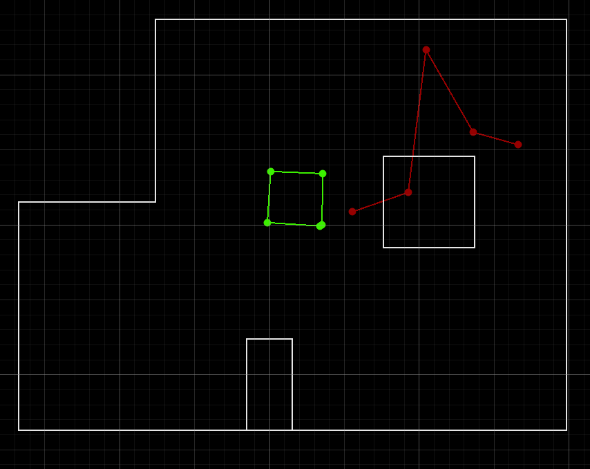
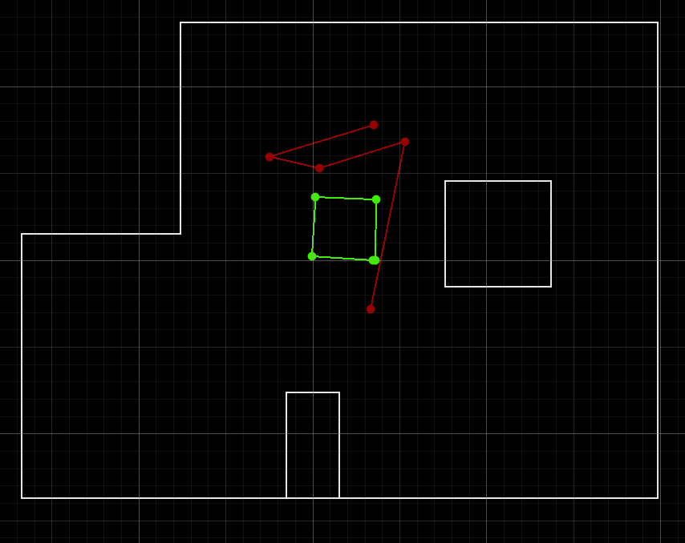
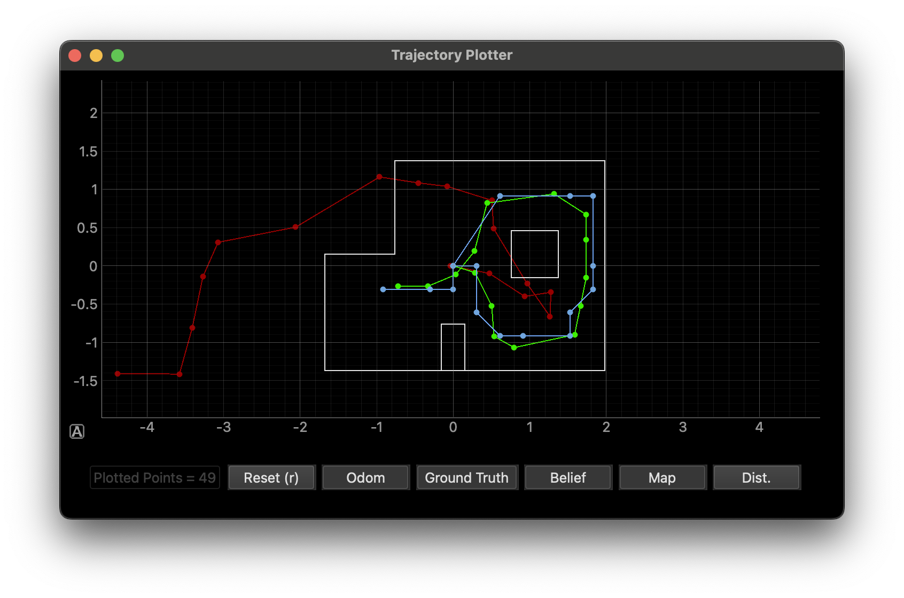

Lab 10: Localization (Simulation)
Goal: Implement grid localization using a Bayes Filter.
Prelab
First, I set up the simulation environment in the prelab following these directions.
Task 1: Square
Using the commander set_vel() and time.sleep() functions, I move the robot in a square. Below is a sample run.
Here are two separate runs that compare the ground truth and the odometry of the robot. We can see that they vary greatly.


I set the duration of a velocity command to be 0.7 seconds. The ground truth is the same for every run, but odometry changes a lot. This is the motivation of the lab!
Task 2: Closed Loop Control
For this task, the robot drives forward until it is close to a wall, keeps rotating until it detects above a certain distance, drives forward, and repeats. I set the robot to turn for 0.7 seconds and its linear speed to 0.5 m/s so it does not move too fast. Here is a sample run.
To improve this closed loop control, I could set the distance threshold to stop and turn to be greater, which would prevent getting too close to the wall.
Localization
Localization is the process of determining where the robot is with respect to the environment. Odometry estimates the robot's position by tracking how much it has moved — but as we saw in the prelab, it is very unreliable.
For this lab, the robot state is 3-dimensional: (x, y, θ). We create a grid over the following continuous space:
[-1.6764, +1.9812) meters / [-5.5, 6.5) feet — x direction
[-1.3716, +1.3716) meters / [-4.5, +4.5) feet — y direction
[-180, +180) degrees — θ axis
Sensor Model
We use a Gaussian distribution to model sensor noise. This is a good fit for laser range finders like our ToF sensor.
Motion Model
At every time step, odometry data is recorded and described by three parameters:
- rotation1 — rotate in place to face the direction of travel
- translation — drive straight to reach the new position
- rotation2 — rotate in place to face the final heading
Bayes Filter Algorithm
Every iteration of the Bayes Filter has two steps: a prediction step that incorporates input data (increasing uncertainty in belief), and an update step that incorporates sensor observations (reducing uncertainty).
Trajectory
Here is the sample trajectory run provided. As we can see, the odometry vs the ground truth was not great at all.
Implementation
compute_control()
Decomposes the change between two odometry poses into the three motion model parameters: rotation1, translation, and rotation2.
def compute_control(cur_pose, prev_pose):
""" Given the current and previous odometry poses, this function extracts
the control information based on the odometry motion model.
Args:
cur_pose ([Pose]): Current Pose
prev_pose ([Pose]): Previous Pose
Returns:
[delta_rot_1]: Rotation 1 (degrees)
[delta_trans]: Translation (meters)
[delta_rot_2]: Rotation 2 (degrees)
"""
dx = cur_pose[0] - prev_pose[0]
dy = cur_pose[1] - prev_pose[1]
delta_rot_1 = np.degrees(np.arctan2(dy, dx)) - prev_pose[2]
delta_rot_2 = cur_pose[2] - prev_pose[2] - delta_rot_1
delta_trans = np.sqrt(dx**2 + dy**2)
delta_rot_1 = mapper.normalize_angle(delta_rot_1)
delta_rot_2 = mapper.normalize_angle(delta_rot_2)
return delta_rot_1, delta_trans, delta_rot_2odom_motion_model()
Answers the question: "given that I executed control u, how likely is it that I end up at cur_pose if I started at prev_pose?" Returns the probability p(x'|x, u) by comparing the expected control to the actual control using Gaussian likelihoods.
def odom_motion_model(cur_pose, prev_pose, u):
""" Odometry Motion Model
Args:
cur_pose ([Pose]): Current Pose
prev_pose ([Pose]): Previous Pose
(rot1, trans, rot2) (float, float, float): A tuple with control data in the
format (rot1, trans, rot2) with
units (degrees, meters, degrees)
Returns:
prob [float]: Probability p(x'|x, u)
"""
rot1, trans, rot2 = u
rot1_hat, trans_hat, rot2_hat = compute_control(cur_pose, prev_pose)
p_rot1 = loc.gaussian(mapper.normalize_angle(rot1_hat - rot1), 0, loc.odom_rot_sigma)
p_trans = loc.gaussian(trans_hat - trans, 0, loc.odom_trans_sigma)
p_rot2 = loc.gaussian(mapper.normalize_angle(rot2_hat - rot2), 0, loc.odom_rot_sigma)
return p_rot1 * p_trans * p_rot2prediction_step()
Implements the prediction step of the Bayes Filter. For every possible cell the robot could be in, contributions from all previous cells are summed, weighted by how likely each transition was. Cells with negligible belief (< 0.0001) are skipped for efficiency. The result is renormalized to maintain a valid probability distribution.
def prediction_step(cur_odom, prev_odom):
""" Prediction step of the Bayes Filter.
Update the probabilities in loc.bel_bar based on loc.bel from the
previous time step and the odometry motion model.
Args:
cur_odom ([Pose]): Current Pose
prev_odom ([Pose]): Previous Pose
"""
u = compute_control(cur_odom, prev_odom)
loc.bel_bar = np.zeros_like(loc.bel_bar)
for prev_x in range(mapper.MAX_CELLS_X):
for prev_y in range(mapper.MAX_CELLS_Y):
for prev_a in range(mapper.MAX_CELLS_A):
if loc.bel[prev_x, prev_y, prev_a] < 0.0001:
continue
for cur_x in range(mapper.MAX_CELLS_X):
for cur_y in range(mapper.MAX_CELLS_Y):
for cur_a in range(mapper.MAX_CELLS_A):
cur_pose = mapper.from_map(cur_x, cur_y, cur_a)
prev_pose = mapper.from_map(prev_x, prev_y, prev_a)
loc.bel_bar[cur_x, cur_y, cur_a] += \
odom_motion_model(cur_pose, prev_pose, u) * loc.bel[prev_x, prev_y, prev_a]
loc.bel_bar /= np.sum(loc.bel_bar)sensor_model()
Returns the likelihood of a set of sensor readings given a specific pose. For each of the 18 observations per cell, it computes a Gaussian probability comparing the actual observation to the expected observation for that pose.
def sensor_model(obs):
""" This is the equivalent of p(z|x).
Args:
obs ([ndarray]): A 1D array consisting of the true observations for a
specific robot pose in the map
Returns:
[ndarray]: Returns a 1D array of size 18 (=loc.OBS_PER_CELL) with the
likelihoods of each individual sensor measurement
"""
prob_array = np.zeros(mapper.OBS_PER_CELL)
obs_data = loc.obs_range_data.flatten()
for i in range(mapper.OBS_PER_CELL):
prob_array[i] = loc.gaussian(obs_data[i], obs[i], loc.sensor_sigma)
return prob_arrayupdate_step()
Updates the belief by multiplying the predicted belief at each cell by the product of sensor likelihoods for that cell, then renormalizing.
def update_step():
""" Update step of the Bayes Filter.
Update the probabilities in loc.bel based on loc.bel_bar and the sensor model.
"""
for x in range(mapper.MAX_CELLS_X):
for y in range(mapper.MAX_CELLS_Y):
for a in range(mapper.MAX_CELLS_A):
loc.bel[x, y, a] = np.prod(sensor_model(mapper.get_views(x, y, a))) * loc.bel_bar[x, y, a]
loc.bel /= np.sum(loc.bel)Running the Bayes Filter
After finishing the implementation, I ran the same trajectory as before, this time using the Bayes Filter to track the belief. Here is a video of the run.
Here is an image of the final position.

As we can see, the Bayes Filter does a good job of maintaining a belief that is close to the ground truth. It performs better when the robot is closer to walls, since sensor readings near obstacles are more reliable.
Collaboration
For this lab, I referenced Lucca's webpage for implementation guidance. During class, I got help with setting up the simulation environment, and consulted Claude with questions about optimizing the prediction and update steps with better Python. I also used Claude to style the website.